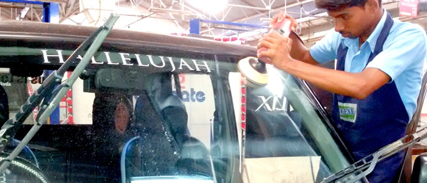
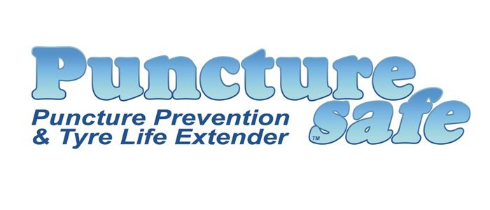

|
Glass Polish  We at Hygene do all kinds of windshield glass polishing services including Side view, Rear view, Headlight and Tail Lamp
It Includes:
Hygene Fiber Cloth Hygene Fiber Cloth is a bind free microfiber cloth with non-abrasive properties which wipe all car surfaces with an electrostatic nature.
The key features of the cloth are:
WOW WASH the Car WOW WASH is modified polymer liquid which is Eco-friendly, a revolutionary car washing process for cleaning your car exterior without the use of water. Using of WOW WASH process in workshops can result in huge savings in money due to saving of manpower, man hours, electricity and water.
Application Areas:
PUNCTURESAFE
Introducing a new range of advanced tyre sealant with Nano Technology to protect you against dangers of puncture.
Some Amazing facts about PUNCTURESAFE:
Motomax Car Care & Appearance Products
Car shampoo, 2k Rubbing Compound, Premium Liquid polish, Silicone liquid polish, Cream polish, Dashboard Polish, Protectant Spray, Bumper Black, Glass Clean, All Clean, Tyre foam.
itkyla
|